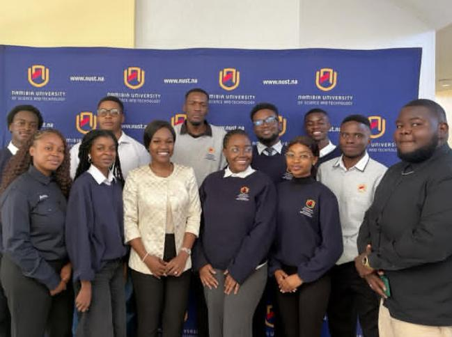

The GSA is a reflection of NUST's top 3 values: Transparency,student empowerment, and collaboration.By bringing together the representatives and the student body, the assembly ensures that the decisions on campus life, academics, and student welfare align with the university's mission.
It was convened earlier this semester by the SRC's of the Namibia University of Science and Technology, aallowing them to present progress reports, address concerns and strengthen the bond with the students. It is held twice a year,with this year's session highlighting the leadership of Jerome !Nanuseb.
The students raised concers around academic resources, campus safety, library hours, and the limited study spaces.